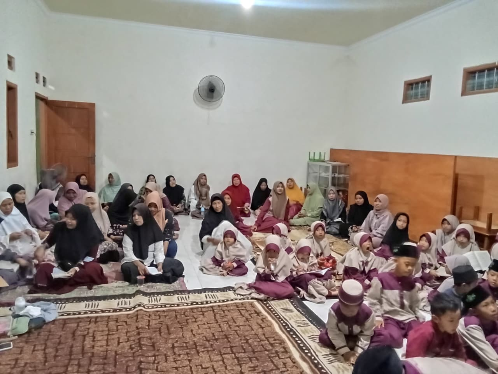
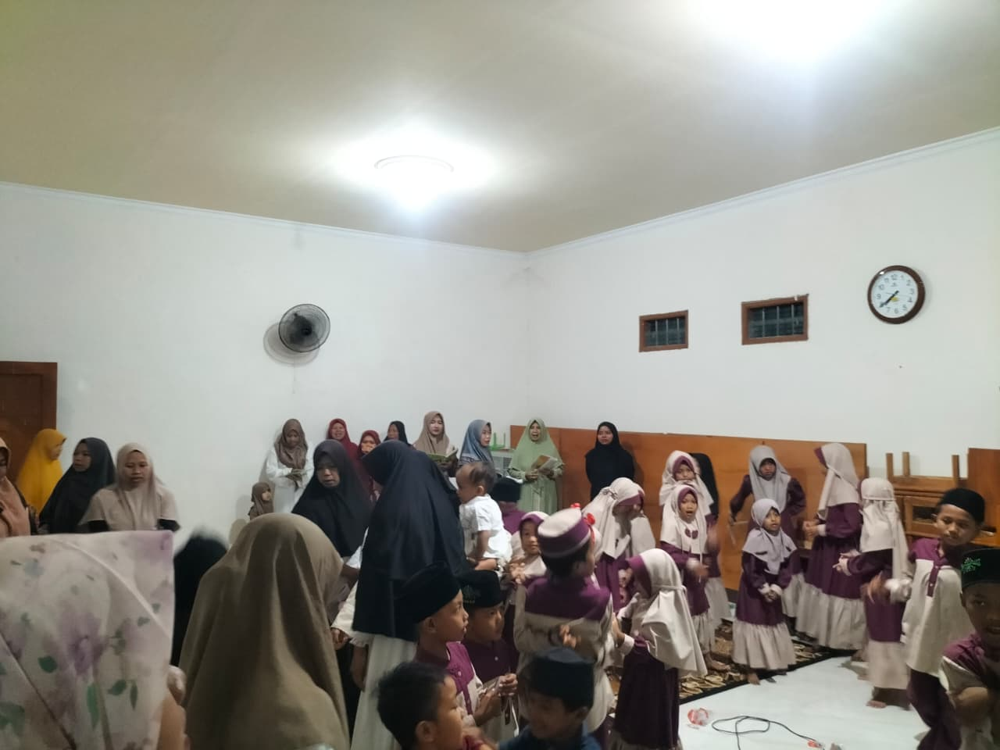
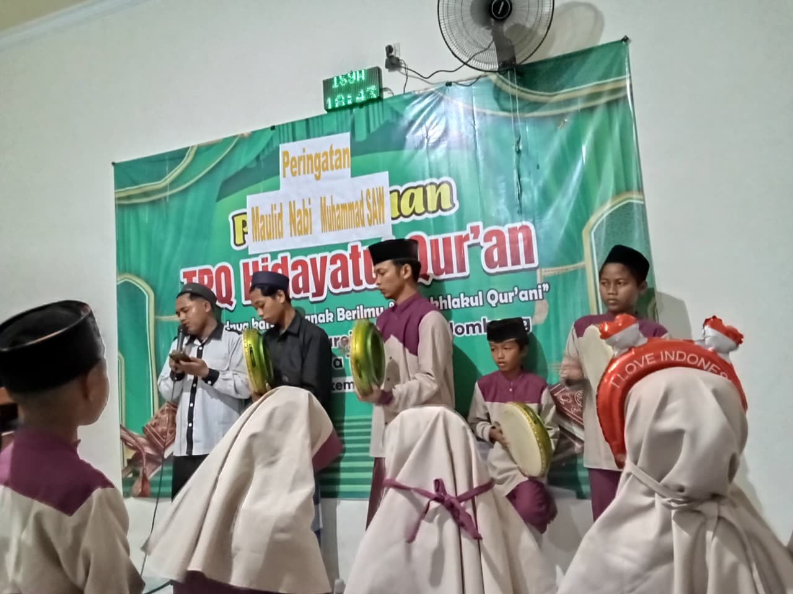
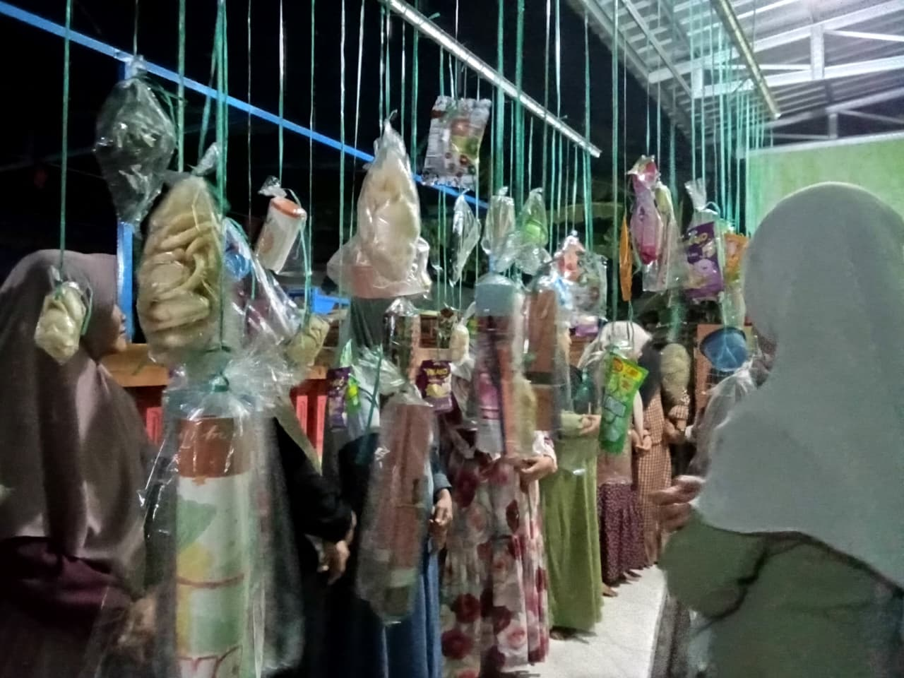
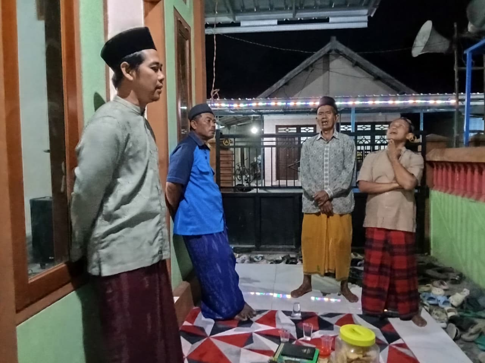
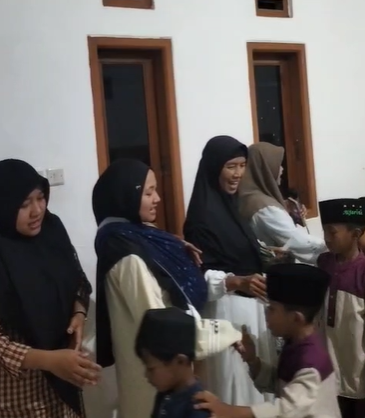

Dokumentasi
Galeri Aktivitas Santri
Momen keceriaan dan kebersamaan santri TPQ Hidayatul Qur'an dalam aktivitas mengaji setiap sore.
alt="Kegiatan Mengaji"
class="w-full h-full object-cover group-hover:scale-110 transition-transform duration-500"
onerror="this.src='https://placehold.co/600x600/16a34a/ffffff?text=Mengaji+Sore'">
Ziarah Bersama Santri

alt="Maulid Nabi Muhammad SAW" class="w-full h-full object-cover group-hover:scale-110 transition-transform duration-500" onerror="this.src='https://placehold.co/600x600/15803d/ffffff?text=Hafalan+Juz+Amma'">Maulid Nabi Muhammad SAW
 alt="Praktik maulid"
class="w-full h-full object-cover group-hover:scale-110 transition-transform duration-500"
onerror="this.src='https://placehold.co/600x600/f97316/ffffff?text=Praktik+Shalat'">
alt="Praktik maulid"
class="w-full h-full object-cover group-hover:scale-110 transition-transform duration-500"
onerror="this.src='https://placehold.co/600x600/f97316/ffffff?text=Praktik+Shalat'">
Bimbingan Praktik Baca Maulid
 alt="Doa Bersama"
class="w-full h-full object-cover group-hover:scale-110 transition-transform duration-500"
onerror="this.src='https://placehold.co/600x600/166534/ffffff?text=Doa+Bersama'">
alt="Doa Bersama"
class="w-full h-full object-cover group-hover:scale-110 transition-transform duration-500"
onerror="this.src='https://placehold.co/600x600/166534/ffffff?text=Doa+Bersama'">
Partisipasi Wali Santri

belajar kelompok

Rutinan pembacaan Diba Bersama

Mahalul Qiyam

Personil Al Banjari

Hadiah Penyemangat Santri

Partisipasi Wali Santri & Maasyarakat

Salim Setelah Mengaji

Wali Santri